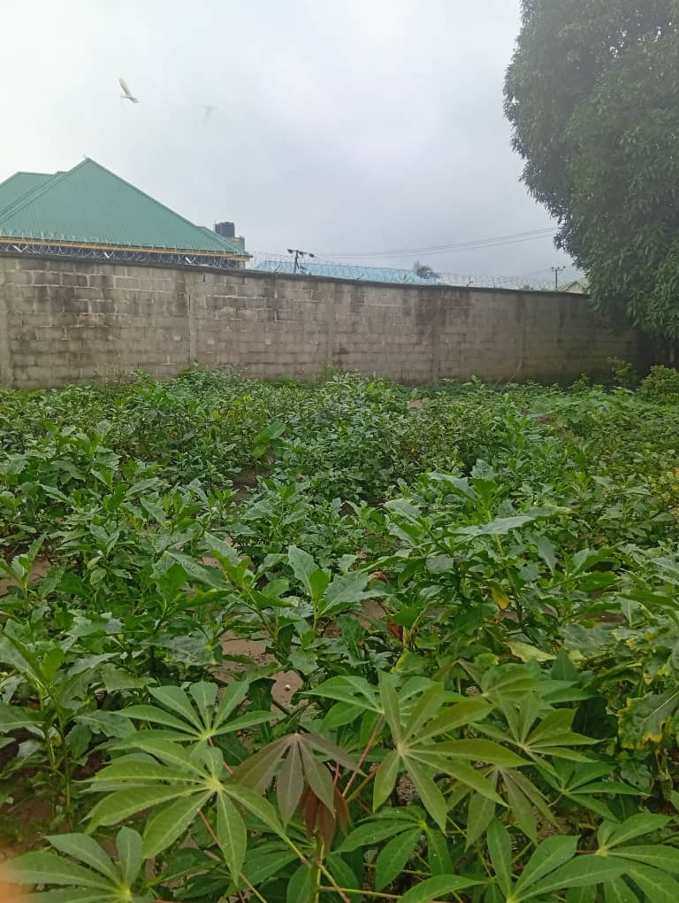
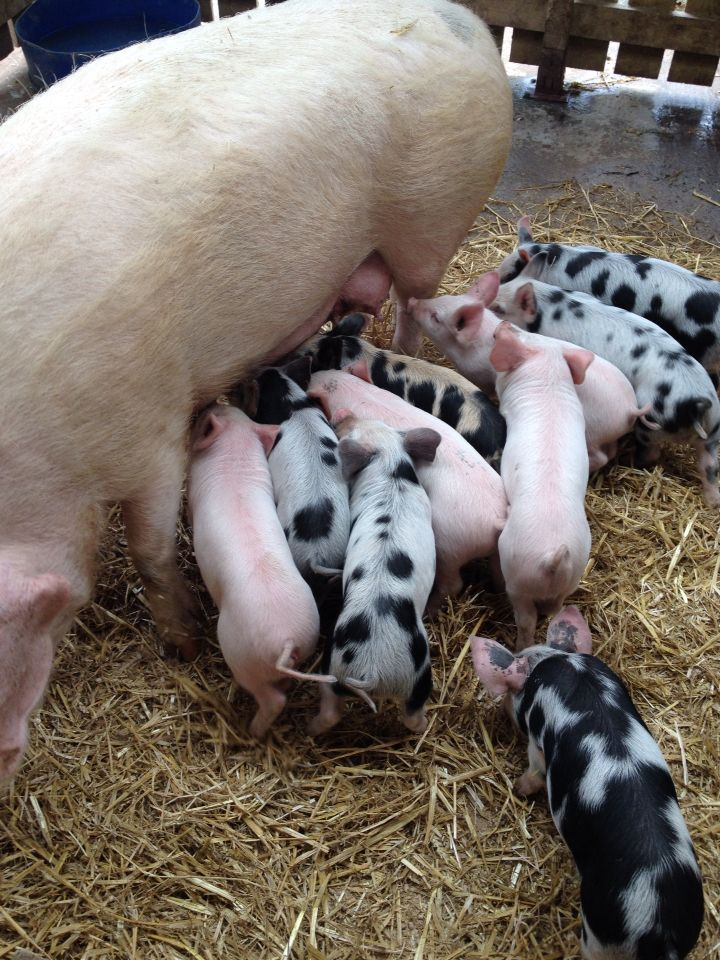
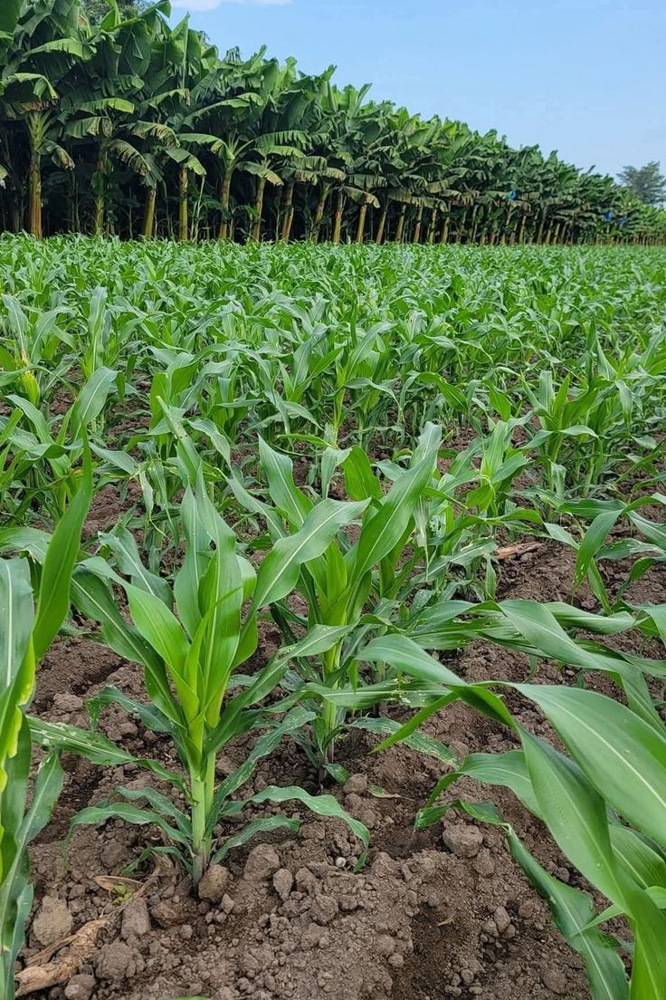
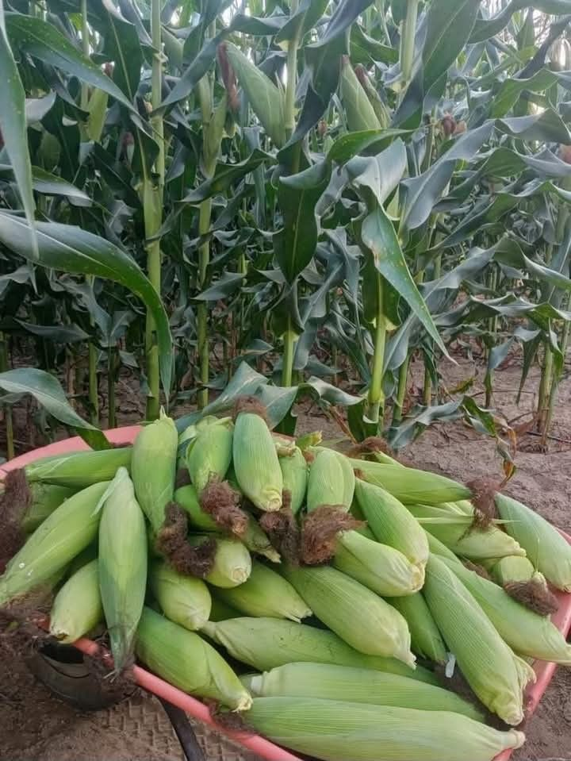
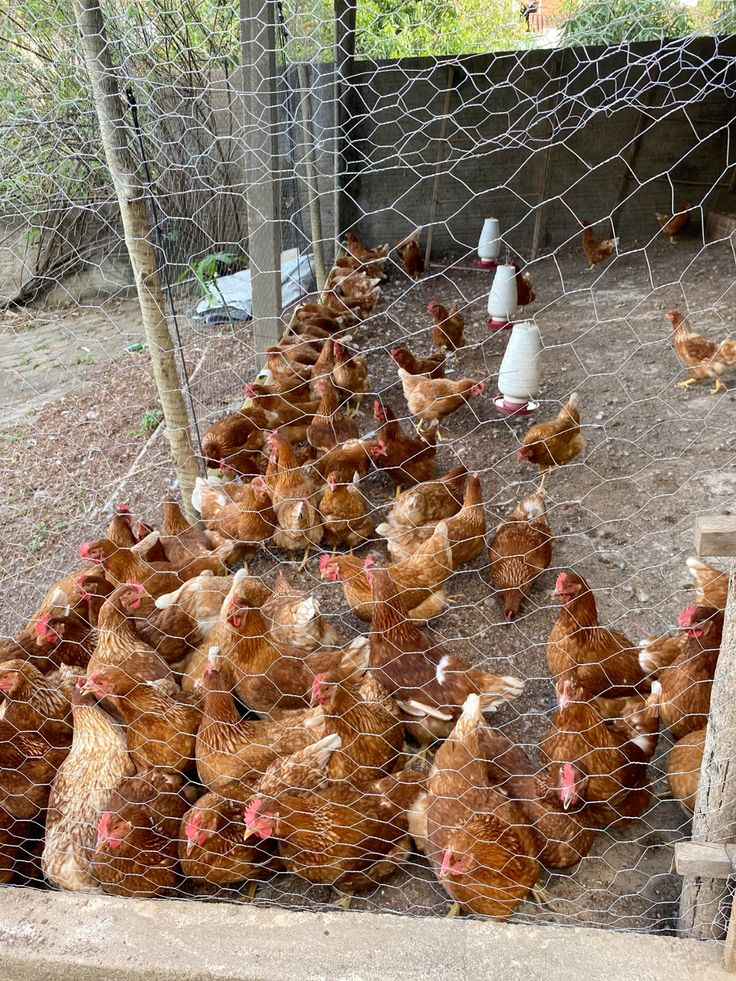
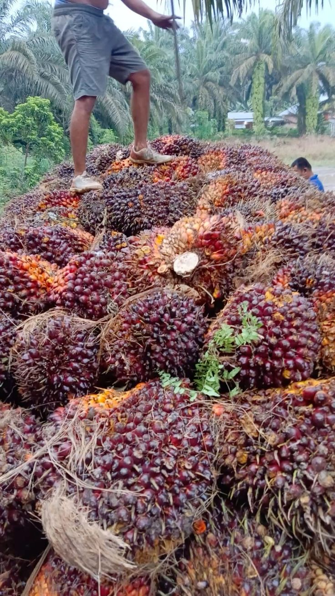

Ella Lee Farm
Agriculture, poultry and practical learning within the Right Steps family.
Agriculture and Practical Learning
Ella Lee Farm is part of the wider Right Steps family and provides a space for agricultural activities, practical learning and development.
The farm creates opportunities for students and participants to understand agriculture while developing useful practical skills.

Areas of the Farm
The farm provides opportunities for agricultural learning and practical development.
Agriculture
Practical agricultural activities that help participants understand farming and food production.
Poultry
Poultry activities provide practical experience in farming and animal care.
Practical Skills
Participants can develop useful knowledge and skills through practical farm activities.
Work-to-Learn
Farm activities encourage learning through practical work and experience.

Learning Through Work
Ella Lee Farm supports practical education by giving participants opportunities to learn through agricultural activities.
This reflects the Right Steps vision of combining education, practical skills and meaningful service.
Ella Lee Farm Gallery
Pictures of the farm and its activities can be added here later.



